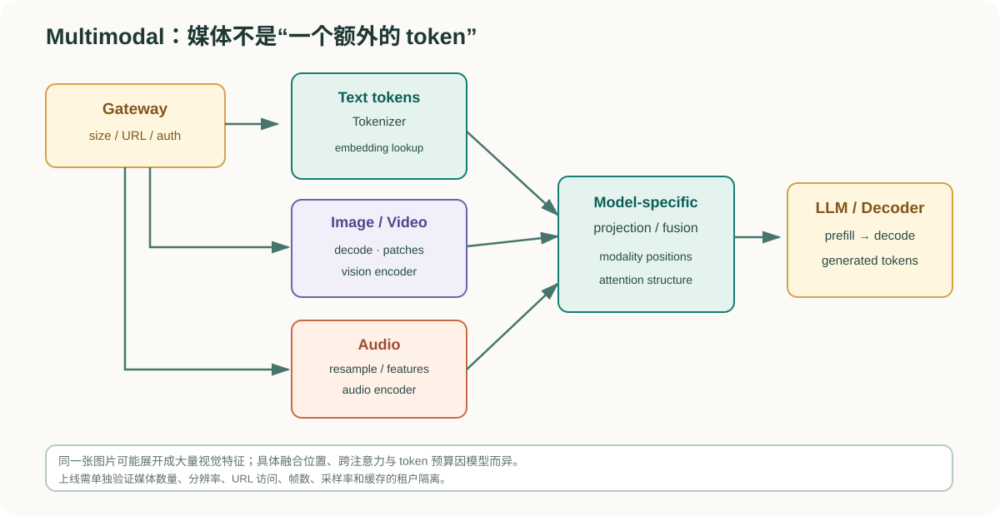

第 22 章 · 高级推理与源码实践
Multimodal Inference：媒体如何进入语言模型？
逐步追踪图像、视频、音频从解码、编码到模型融合的路径，解释动态视觉 token、资源预算、兼容矩阵和媒体安全。
给模型传入一张图片，并不等于只增加一个 token。模型可能需要先把图片解码、切块、编码，再把视觉信息与文本融合；视频、音频的特征长度和计算路径又不同。多模态服务必须同时回答架构、调度、性能和媒体访问安全问题。
学习目标
- 识别 text、image、audio、video 的不同输入路径。
- 解释分辨率、帧数、采样率对成本的影响。
- 写出离线 multi_modal_data 请求骨架。
- 了解媒体 URL 的 SSRF 风险和模型支持矩阵。

22.1 多模态数据不是“把 JPEG 当文字 token”
文本路径通常先 tokenize 再映射为 token embeddings；图像路径会经历解码、Resize/Crop/patchify、视觉 encoder 或 projector，并与文本 token embedding 对齐/融合；音频可能涉及声学特征、音频 encoder、timestamp/chunk 边界；视频则包含帧采样与跨帧顺序。具体融合形式由模型架构定义，不能把所有 VLM 都画成“ViT 后直接拼在开头”。
在 LLaVA 等典型模型中，文本模板里的图像占位符表示嵌入插入位置；某些视觉模型允许多个裁剪或动态 patch 数。相同“1 张图片”可能展开为大量视觉 tokens，视觉 token 数受分辨率、裁剪策略和 processor 决定。
T_prefill ≈ T_media_decode + T_encoder + T_projector + T_language_prefill这个式子是延迟的概念分解，不是所有模型都按这些阶段严格串行，也不代表每种架构都有单独 projector；GPU 并行和重叠执行会改变总时间。
22.2 真实请求与数据类型的映射
vLLM 离线 API 以 prompt 搭配 multi_modal_data 表示包含媒体的请求；媒体可以是 PIL 图片、视频帧列表、音频数组或经过模型支持的预处理形式。OpenAI 兼容在线 API 通常使用 Chat Completions 消息里的媒体 content parts。
# 仅作结构说明，选用目标模型支持的 chat template 和媒体
from vllm import LLM
from PIL import Image
image = Image.open("example.png").convert("RGB")
llm = LLM(model="llava-hf/llava-1.5-7b-hf",
limit_mm_per_prompt={"image": 1})
result = llm.generate([{
"prompt": "USER: <image>\nDescribe the image.\nASSISTANT:",
"multi_modal_data": {"image": image},
}])
示例中的模板用于特定模型家族；其他模型需要使用其官方 Chat Template，不能照抄 <image>。音频输入通常包含 waveform 与采样率，视频输入包含帧顺序与时间信息，且支持矩阵会随 vLLM 版本、前端和模型后端变化。
22.3 为什么多模态会增加内存和排队成本？
输入长度不能只按用户文字字符数计。视觉 token 扩展、音频帧、视频采样、encoder activation 和多模态缓存均可能增加内存、TTFT 和调度压力。
N_effective ≈ N_text + N_image_embeddings + N_audio/video_embeddings这里是统一计算预算的抽象概念，不是所有架构真正执行一条相同长度的注意力序列。有些 encoder 先融合媒体、有些使用交叉注意力或特殊模型路径。需要实际查看目标模型的 profiling 日志、prompt tokens 与运行时多模态指标。
limit_mm_per_prompt / --limit-mm-per-prompt 用于配置每个模态项的数量或尺寸提示（取决于版本）。限制图片 count 不等于限制图片像素，也不等于限制总视觉 token 数；生产入口应同时设定媒体大小、格式、URL 来源、音视频时长和并发预算。
22.4 从队列到模型执行：调度如何变化？
多模态请求增加了 CPU preprocessing、media decode、encoder prefill 和 GPU 执行间的依赖关系。与纯文本场景相比，请求可能在媒体准备完成前不能进入相同阶段。某些 V1 工作流允许多模态 encoder 的独立调度与缓存；但具体等待状态和调度方式需要按目标源代码验证。
若同一图片反复请求，多模态 processor cache 或 encoder cache 可能减少重复工作，但同时带来缓存 key、生命周期和隔离问题；跨租户媒体 UUID 不应未经认证就跨域复用。前文第 09 章的 Prefix Cache 不能代表所有媒体处理缓存。
要追踪延迟，分别记录下载/解码、encoder、language prefill、decode、排队和网络阶段。若仅看最终 E2E，无法判断是图片请求超大还是 GPU decode 变慢。
22.5 安全：媒体 URL 是服务端网络访问入口
允许服务端抓取用户提供的图片 / 视频 URL 时，必须考虑 SSRF：请求可能将服务器引向集群内网、实例元数据地址或不受信任的资源。当前官方文档建议使用 --allowed-media-domains 限定可访问域名；必要时设 VLLM_MEDIA_URL_ALLOW_REDIRECTS=0，避免重定向绕过域名策略。
对于本地文件路径，只在明确受信任的环境中限制性地启用 --allowed-local-media-path；不要将任意文件路径读权限交给公网用户。媒体本身还可能包含敏感信息，日志与缓存应受控并按租户作用域管理。
权限边界：把媒体输入是否合规、URL 是否可访问、文件大小是否超额放在 Gateway / Preprocessor 层验证，而不是依赖模型回答“拒绝读取”。
22.6 兼容矩阵：模型、模态、后端与优化
所谓“vLLM 支持视频/音频/LoRA”不是对所有模型都成立。应核对模型架构、任务、设备、backend、chat template、media preprocessor 和部署版本。例如某些模型在指定版本要求 Rust frontend 处理特定多模态输入；一些量化 kernel、CUDA Graph 捕获和 LoRA 适配只覆盖特定路径。
| 功能 | 上线前要核验 |
|---|---|
| 图像/多图 | 处理器、最多图片数量、动态分辨率、视觉 token 预算 |
| 视频 | 帧率采样策略、最大帧数、顺序与时间编码 |
| 音频 | 采样率、片段边界、Speech-to-Text vs Speech-to-Speech 任务 |
| LoRA | 目标模块是否包括视觉/音频 encoder；所选模型的适配器支持范围 |
| 性能 | encoder cache、CUDA Graph、CPU preprocess 与多模态 batch 混合 |
使用官方“Supported Models”与多模态示例的确切模型名，做一组真实媒体请求验证质量、资源、延迟、错误和取消流程；不要承诺所有设备或模型都支持同一条启动命令。
本章自检
- 为什么图像数不等于视觉 token 数？
- 多模态媒体 URL 的 SSRF 风险由哪个组件限制？
- 为什么视频帧数、分辨率与音频时长会影响显存和 TTFT？
- 如何核验某个模型/模态/后端/功能组合是否受支持？
参考资料与源码入口
- Multimodal Inputs：模型示例、媒体格式、URL 访问限制与模态配置
- Supported Models：核对不同模型架构支持的模态和任务
- MultimodalConfig：prompt 限制、媒体约束和配置来源
- Security：媒体、缓存和网络边界
审校基线：vLLM e72fc9ae50c221180c4b8f4a94c5009714a4b199（2026-11-22）；nano-vLLM bb823b3e06983d71485a8e1f23715ebd87d98ef8（2026-04-26）。任何配置建议必须与目标版本、目标模型及硬件实测相互核验。